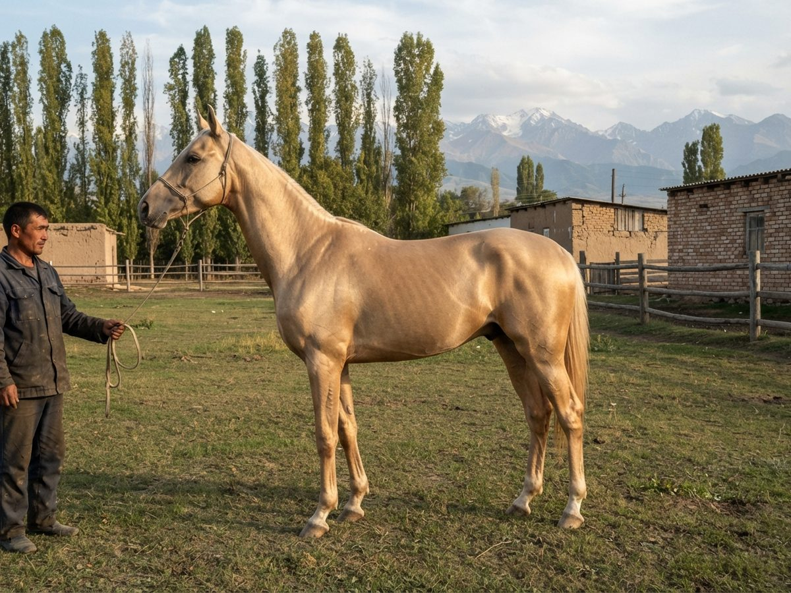
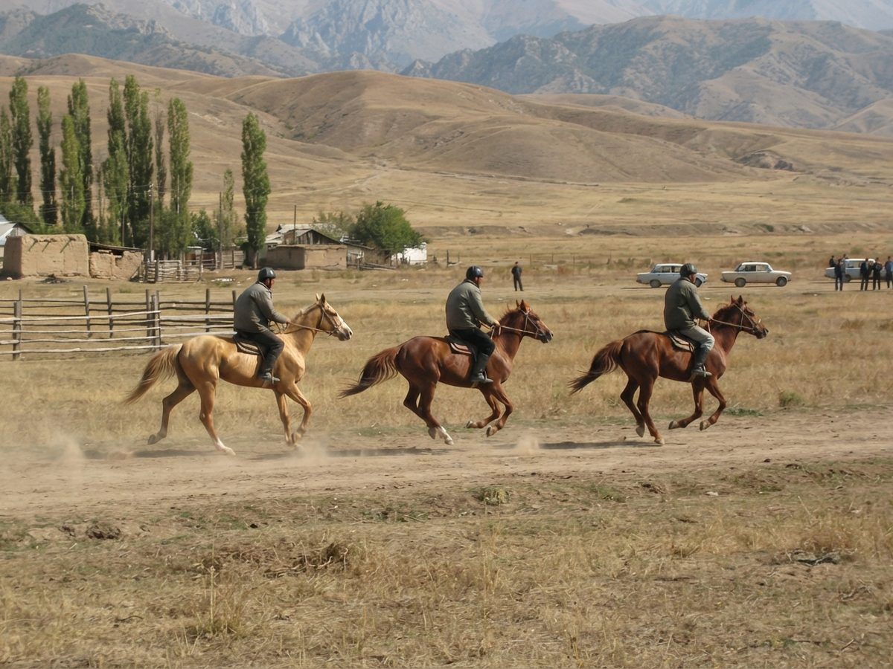
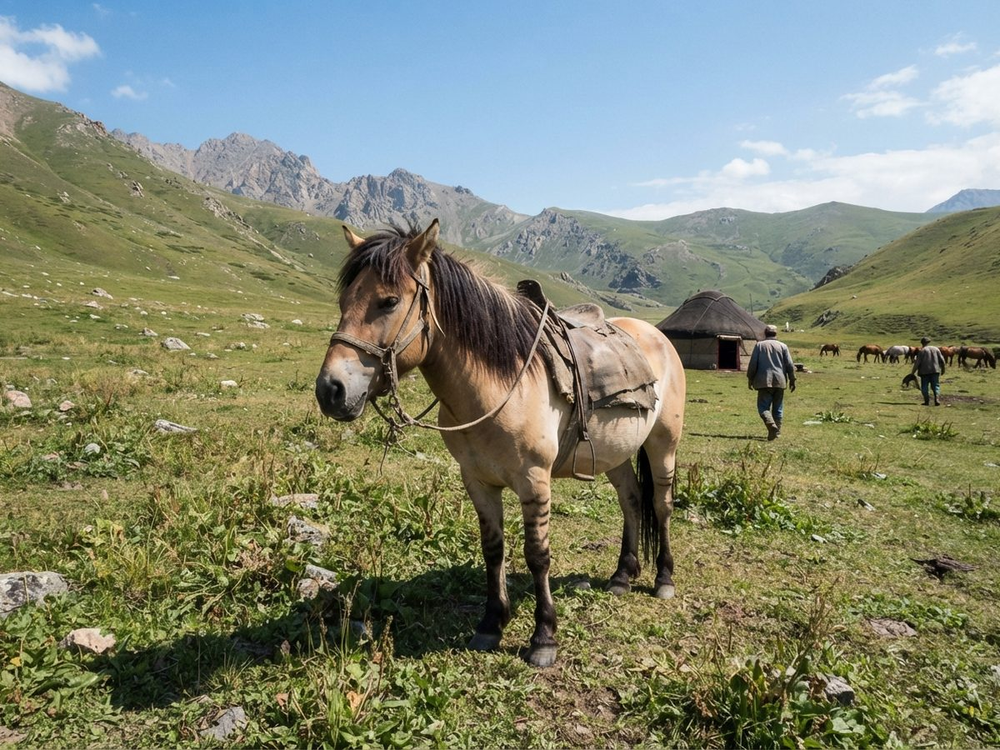
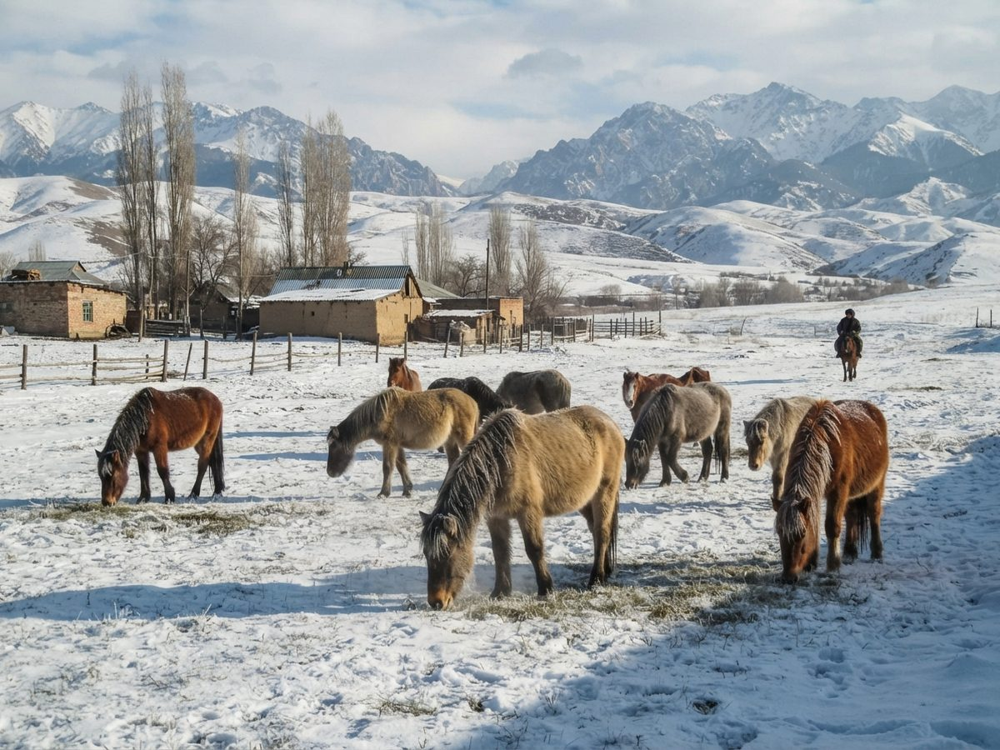

The breeds
The white stallion on the flag stands for both. They could hardly be less alike.

Akyel (akyel, "white wind")
A slender, long-legged riding horse of the Talas and Chu valleys, 152-160 cm, with a fine head, a high-set neck, a thin mane and the metallic coat sheen breeders call doran. The prized colours are palomino and the golden shades; bay, chestnut, buckskin and pale cream are common. It is used for at chabysh (endurance races of 20 to 50 km), parades and showing, and it is Irad's most valuable horse export.
Breeders trace it to the "heavenly horses" of Dayuan in the Fergana valley, and their lore gives the doran coat to the legendary stallion Kan-Ter. That descent is tradition: it can't be shown genetically. The breed is of the same type as the Akhal-Teke and close to it.
The first Akyel studbook opened in 1927 with Jaynak as No. 1, and most registered Akyels trace to him in the male line. Collectivization and crossing with Thoroughbreds nearly ended the breed: a 1956 survey found fewer than 300 Akyel-type mares, most of them at Chong-Talas. Uchkun (1959) won gold at VDNKh in 1967 and put the Akyel into the all-Union breed register. Since 1995 the National Akyel Studbook has been kept by the Akyel Equine Logistics & Breeding Syndicate. Registration needs DNA testing against both parents and an inspection, and stallions must pass an endurance trial. In 2023 the book listed about 3,100 living horses. Colour lines are recorded, among them the palomino lineage and the chestnut bloodline.

The TSU veterinary faculty has warned that inbreeding is rising because a few sires are used so heavily. Every horse page here shows an inbreeding figure, and the test mating page shows it for a planned foal.
Chongtor ("great mountain horse")

A small, stocky mountain horse of the Talas Alatau and the Chatkal highlands, 137-147 cm, deep in the chest, with dense bone and hard dark hooves that are usually left unshod. Bay, dun, roan and grey are the usual colours. It lives out at -30 °C, carries the herding families on the move between pastures, and is the horse for ulak tartysh and oodarysh.
The first Chongtor studbook opened in 1926 with Kökjal as No. 1, but the Soviet system never recognised the Chongtor as a breed. Before that, and in the valleys ever since, pedigrees were kept by memory in the clan genealogies (sanjyra). The present Chongtor Studbook Registry dates from 1993 and has had a joint board since 2008. Registration needs DNA parentage, an inspection (cannon bone over 19 cm) and a timed 30 km ascent above 2,800 m. Inspection committees also admit horses with several generations of recorded oral pedigree. In 2023 the Registry listed about 23,600 living horses. Most horses in the tribal regions are not registered, so the Chongtors here are only part of the breed. The leading modern sire line goes back to Almanbet. The Chongtor Horse Breeding Guild issues its own breeding certificates. We give its horses when a member sends the papers.

Crosses
| Code | Cross | Notes |
|---|---|---|
| X | Akyel x Chongtor | An old cross for a hardier riding horse, and the film horses of Talasfilm, like Tuman. Neither book registers it. |
| H | Akyel half-bred | Akyel mares by imported Thoroughbreds, bred for flat racing since 2009, mostly at Ak-Tilek Ranch. They race in the half-bred classes at the Hippodrome. |
| Q | Chongtor x Quarter Horse | Ranch horses from Semiz, where the lienzo riders work with quarter horses. The Chongtor Registry enters only purebred horses. |
More reading: Akyel horse and Chongtor horse on the Irad Wiki.